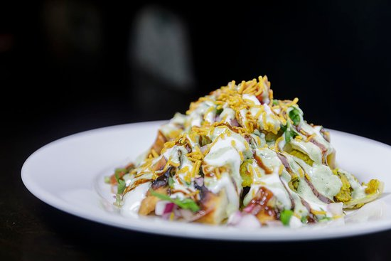

1 / 6

スクティ
2 / 6

ナン アンド カレー
3 / 6

ライス アンド カレー
4 / 6

チョウメイン
5 / 6

ネパール FOODS
6 / 6

チャット
ネパールには明確な調理スタイルはありません。ただし、食習慣は地域によって異なります。ネパール料理は、インド料理とチベット料理のスタイルの影響を受けています。 ネパール料理とタカリ料理には本格的なネパールの味があります。